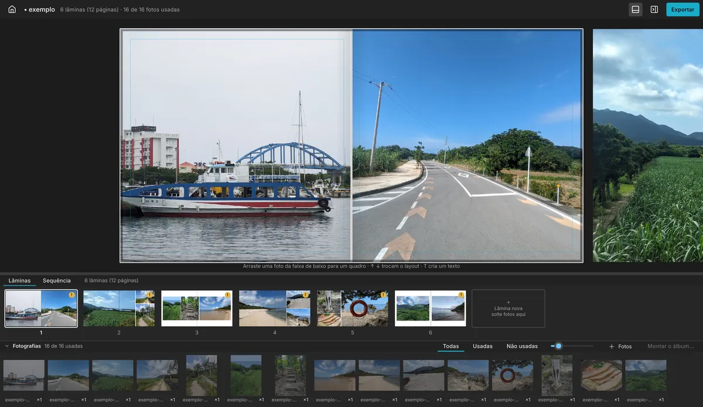
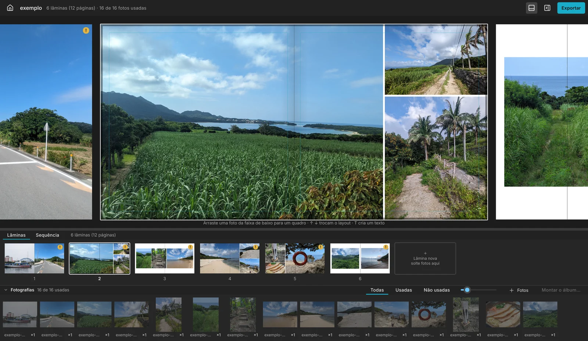
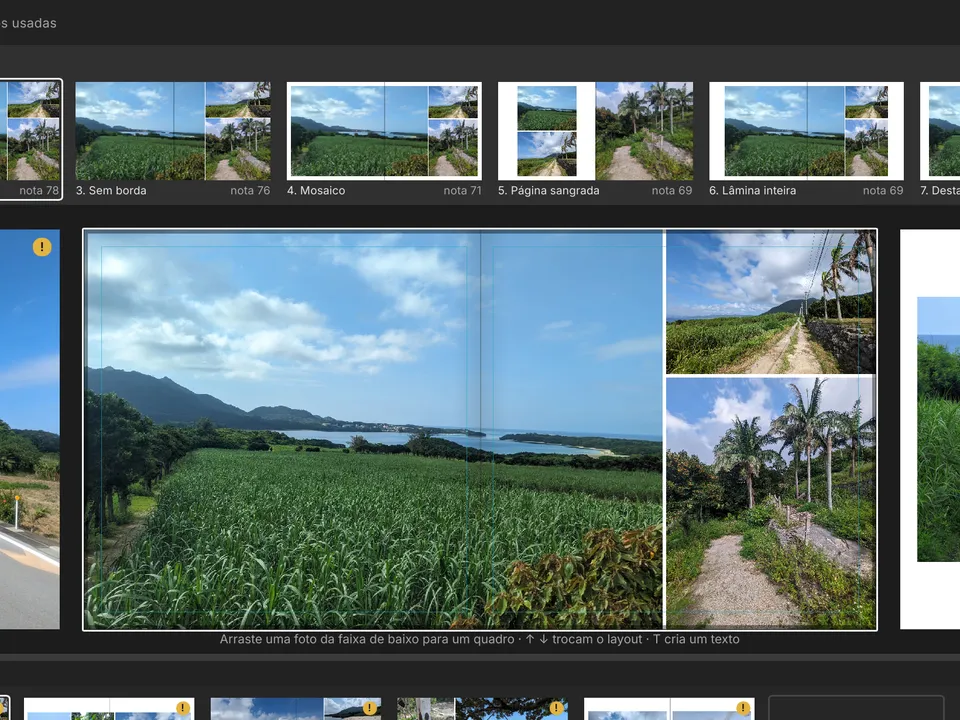
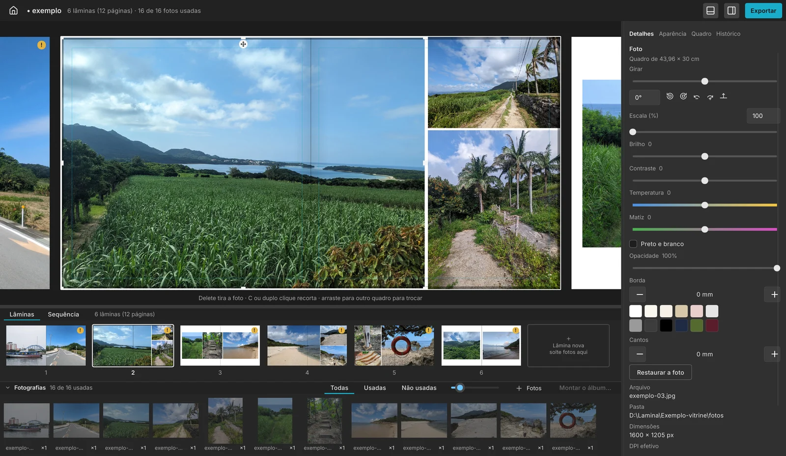
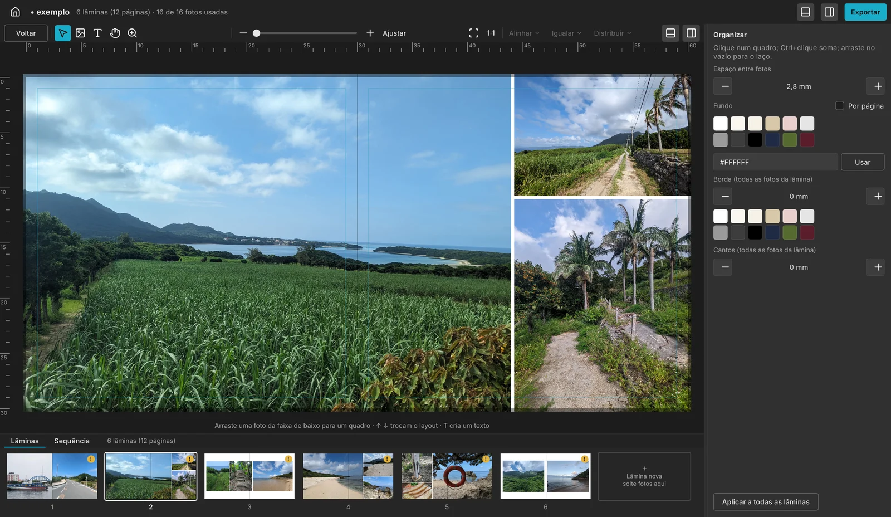
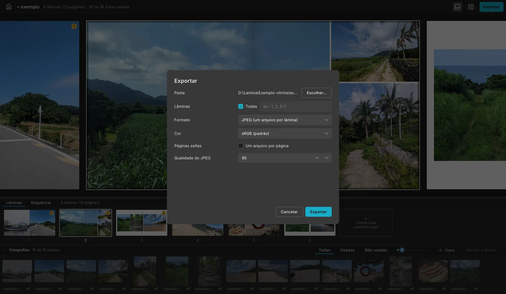
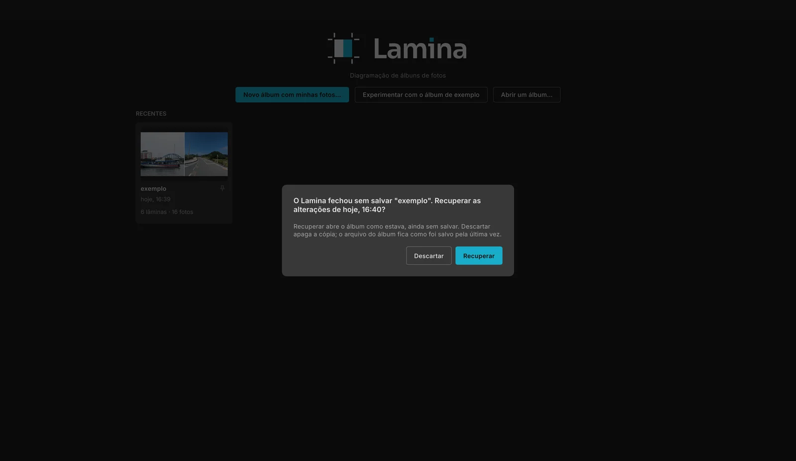
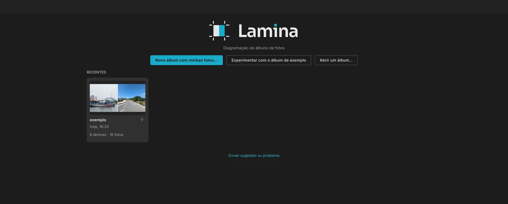

Escolha a pasta das fotos. O Lamina monta o álbum.
Um diagramador de álbuns de fotografia grátis e de código aberto, para Windows, Mac e Linux. Troque layouts com as setas, ajuste cada foto e mande para a gráfica em PDF/X-4, TIFF ou JPEG.
Na primeira vez, o Windows e o Mac avisam que não conhecem o Lamina: ele não paga a assinatura da Microsoft e da Apple. Veja os dois cliques que liberam.

Feito para quem entrega álbum toda semana

Layouts feitos para as suas fotos
Cada layout é calculado pela proporção de cada foto: nada de biblioteca fixa de modelos. As opções com as fotos maiores vêm primeiro, inclusive sem borda, e você escolhe quanto o Lamina pode cortar. ↑ e ↓ trocam de layout, E espelha, F favorita e L mostra todas as opções de uma vez.

O álbum montado sozinho
A montagem automática agrupa as fotos por momento, cuida do ritmo e da variedade das lâminas e explica por que escolheu cada layout. Você começa revisando, não do zero.

Cada foto no ponto, sem sair do álbum
Endireitar com precisão de 0,1°, girar, escala, brilho, contraste, preto e branco, temperatura e matiz por controles deslizantes. O que você vê é o que vai para a gráfica.
- < 40 ms
- para cada mudança aparecer na tela. 1.000 fotos de 24 MP entram em menos de um minuto.
- 1 minuto
- entre uma cópia de segurança e outra. Se o computador desligar, o Lamina pergunta "Recuperar?".
- PDF/X-4
- TIFF sem perda, JPEG 95 com cor 4:4:4, Adobe RGB, marcas de corte e uma pré-impressão que aponta os problemas.
O Lamina e os programas de diagramação comuns
| Aspecto | Lamina | Comum em outros programas |
|---|---|---|
| Preço | Grátis; apoiador opcional, R$ 99 por versão maior | Assinatura mensal ou licença paga |
| Sistemas | Windows, Mac (Intel e Apple) e Linux | Windows e Mac |
| Conta e internet | Sem conta; funciona sem internet | Conta e ativação pela internet |
| Seus dados | Não envia nada sozinho | Varia |
| Código | Aberto (Apache-2.0) | Fechado |
| Layouts | Calculados para cada foto | Biblioteca fixa de modelos |
| Trabalho salvo | Cópia a cada minuto e histórico completo | Varia |
| IA | Pelo Claude Desktop, cada passo desfazível | Raro |
Comparação geral com o que é comum no mercado de diagramação de álbuns; cada programa tem seus pontos fortes.
Por dentro do Lamina
Telas do programa de verdade, com o álbum de exemplo que vem junto (fotos livres, CC0).







Instalar, mesmo com o aviso do sistema

Por que o aviso aparece? A Microsoft e a Apple cobram uma assinatura anual para reconhecer um programa. O Lamina é grátis e não paga, então o sistema avisa na primeira vez. O aviso não quer dizer vírus.
- O código é aberto e cada instalador é montado pelo GitHub Actions, à vista de todos.
- Cada versão publica o
SHA256SUMS, para conferir o arquivo baixado. - Depois de instalado, o Lamina se atualiza sozinho, sem aviso.
-
Plano A · pelo PowerShell, sem aviso
Menu Iniciar → digite PowerShell → abra e cole:
irm https://raw.githubusercontent.com/alberthpalhares/lamina-app/main/crates/lamina-app/dist/instalar.ps1 | iexBaixa a versão mais nova, confere o SHA-256 e instala sem senha de administrador.
-
Plano B · pelo navegador
Baixe o Setup.exe. Se o navegador segurar o arquivo: no Edge, ⋯ → Manter → Mostrar mais → Manter mesmo assim; no Chrome, Manter. Ao abrir, na janela azul "O Windows protegeu o computador", clique em Mais informações e depois em Executar assim mesmo.
-
Plano C · desbloquear antes de abrir
Se "Executar assim mesmo" não aparecer: botão direito no
Setup.exe→ Propriedades → marque Desbloquear → OK. Ou no PowerShell:Unblock-File "$HOME\Downloads\Lamina-win*-Setup.exe"
-
Plano A · pelo Terminal, sem aviso
Launchpad → Outros → Terminal → cole:
curl -fsSL https://raw.githubusercontent.com/alberthpalhares/lamina-app/main/crates/lamina-app/dist/instalar.sh | shO Lamina vai para Aplicativos e abre os arquivos
.laminacom dois cliques. -
Plano B · pelo instalador
Baixe o Setup.pkg e abra. Se o Mac disser que não pode verificar o desenvolvedor, clique em OK, abra Ajustes do Sistema → Privacidade e Segurança, role até o fim e clique em Abrir mesmo assim. Pode acontecer duas vezes: no instalador e ao abrir o Lamina. No macOS 15 ou mais novo, o atalho "botão direito → Abrir" não libera mais: use os Ajustes.
-
Plano C · tirar a marca de "baixado da internet"
Se o Mac disser que o Lamina "está danificado" ou não abrir:
xattr -dr com.apple.quarantine /Applications/Lamina.app
-
Plano A · pelo terminal
curl -fsSL https://raw.githubusercontent.com/alberthpalhares/lamina-app/main/crates/lamina-app/dist/instalar.sh | shFica em
~/.local/bin/Lamina.AppImage; abra uma vez para o atalho entrar no menu. -
Plano B · pelo navegador
Baixe o .AppImage, botão direito → Propriedades → Permitir executar como programa, e abra.
-
Se nada abrir
sudo apt install libfuse2No Ubuntu 24.04 ou mais novo, o pacote é
libfuse2t64.
Conferir o arquivo: compare o resultado de Get-FileHash (Windows) ou shasum -a 256 (Mac) com o SHA256SUMS da página da versão. Passo a passo com as telas no guia de instalação.
Grátis de verdade. Apoiador, se quiser.
Grátis, sem prazo
Montar o álbum, layouts, cortar, girar, escala, brilho, contraste, preto e branco, texto com as fontes embutidas, JPEG, TIFF e PDF/X-4 em sRGB com marcas de corte, cópia de segurança e atualizações.
Licença de apoiador · R$ 99 por versão maior
A licença da 1 vale em toda a 1.x, sem conta e sem cadastro. Libera:
- temperatura e matiz;
- tamanhos próprios e modelos de lâmina salvos;
- exportação em Adobe RGB;
- o programa
laminano terminal; - o controle por IA pelo Claude Desktop;
- fontes instaladas no computador.
Nada se perde no grátis: um álbum feito com recursos de apoiador abre e exporta igual. A compra abre pelo menu Ajuda do Lamina quando a venda começar.
Perguntas frequentes
O aviso do sistema quer dizer que o Lamina tem vírus?
Não. Ele aparece para todo programa que não paga a assinatura da Microsoft ou da Apple. O código é aberto, os instaladores são montados pelo GitHub Actions e o SHA256SUMS permite conferir o arquivo.
Preciso de internet?
Só para baixar e atualizar. O Lamina funciona sem internet, sem conta e não envia nada sozinho.
Meus álbuns ficam onde?
No seu computador, num arquivo .lamina que aponta as fotos nas pastas originais. As fotos nunca são copiadas nem alteradas.
E se o Lamina fechar no meio do trabalho?
Ao abrir de novo, ele pergunta "Recuperar?" e volta o trabalho da última cópia de segurança, feita a cada minuto.
Como relato um problema?
No Lamina, Ajuda → Enviar sugestão ou problema…, sem precisar de conta. Ou abra uma issue no GitHub. Nunca anexe fotos de clientes.